Créations graphiques
L'univers coloré d'une graphiste et webdesigneuse !
Qui suis-je ?
« Les créas de Loune » est un site de créations graphiques. Je vais présenter ici toutes les créations que je fais, pour diverses commandes passées sur des forums d'aide.
Étudiante en communication et graphiste sur deux forums d'aide, je suis également webdesigneuse et je fais un peu de programmation.
Pour en savoir plus, je vous invite à visiter :
Ma présentationActualités et nouveautés
Ajouts
28 juin 2015
• Ajout d'une bannière (Bienvenue chez Billy) et deux avatars en créations non utilisées.
Mise en ligne du nouveau design
16 juin 2015
• Le site est mis en ligne avec le nouveau design.
Ma présentation
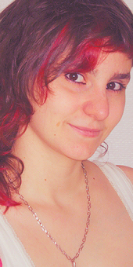« Les créas de Loune » est un site regroupant le travail graphique que je fais depuis quelques années maintenant. Il présente des avatars, des kits, des signatures, des bannières mais également des chartes graphiques et les visuels de quelques sites Internet que j'ai confectionnés, sites tels que celui-ci.
Étudiante en communication, j'ai débuté le graphisme sur Photofiltre Studio en 2011 durant ma première année de DUT en Information et Communication, après quelques essais de kits destinés à des forums RPG. Je suis passée en 2013 sur un autre logiciel, Photoshop CC, que j'apprends encore aujourd'hui à maîtriser. Graphiste sur un forum d'aide, je mets toutes mes compétences au service de mes commanditaires.
Concernant la conception des sites Internet et des chartes graphiques, j'ai débuté ce travail durant les années 2014 et 2015. Loin d'être développeuse, je suis plus tournée vers la programmation des feuilles Stylus/CSS ainsi que le travail sur l'ergonomie, dans le but de proposer un habillage et un rendu correct pour l'utilisateur. Je suis en premier lieu graphiste et spécialisée en communication et ergonomie.
Si vous souhaitez me contacter, vous le pouvez dans la section « Contact / Crédits », de même si vous souhaitez utiliser des créations présentées ici. Si vous souhaitez devenir partenaire, je vous invite à visiter la section « Fiches des partenaires » où toutes les conditions sont énoncées.
N'hésitez pas à me contacter si vous avez la moindre question ou remarque.
Les kits
Vous trouverez dans cette section des kits graphiques pour forum (RPG, de discussion...). Un kit graphique est un ensemble constitué d'un avatar et d'une signature, utilisé sur un forum (RPG, de discussion...). Il m'arrive parfois de faire un kit avec deux avatars et une signature, soit pour deux personnages ayant un lien soit pour un personnage mais avec deux versions de l'avatar.
BrunhildeGarlandGrim et IllynaHamaraKyoLeonaLouneMugenSalenna et AméthryldeSingle BirdsTiaWilfriedCréations non utiliséesKit 1
Kit 2

Kit 3
Kit 4
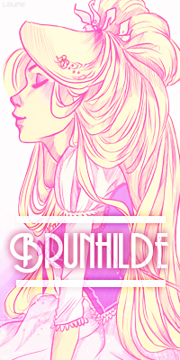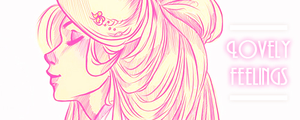
Kit 1
Kit 2
Kit 2
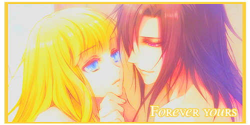
Kit 1
Kit 2
Kit 3
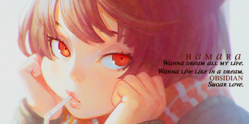
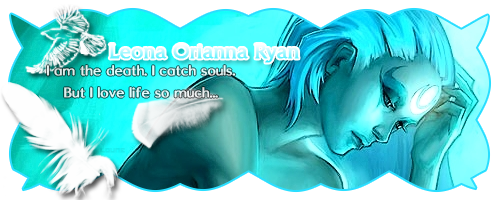
Kit 1
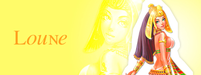
Kit 2
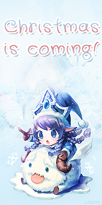
Kit 3
Kit 4
Kit 5
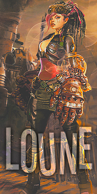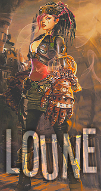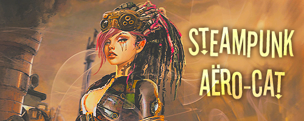

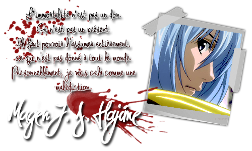
Kit 1
Kit 2
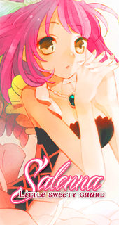
 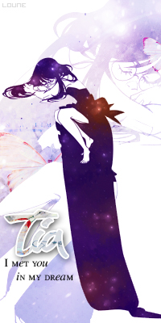
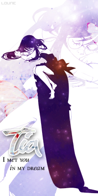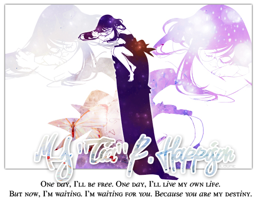
Créations non utlisées
Les créations non utilisées peuvent être commandées et modifiées, dans la mesure de mes possibilités. Merci de lire les conditions dans la section « Contact / Crédits ».
Section vide pour le moment.
Les avatars
Vous trouverez dans cette section des avatars pour forum (RPG, de discussion...). Les dimensions sont assez diverses, généralement elles sont précisées dans le règlement de chaque forum. Je vous propose quatre des dimensions les plus courantes.
Avatars 170*320Avatars 200*320Avatars 200*360Avatars 200*400Créations non utiliséesAméthrylde
Carter
Loune
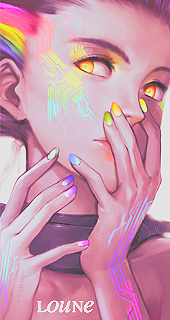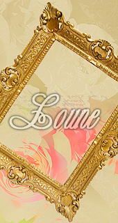Zilehad
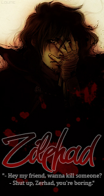Prudence
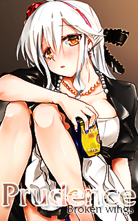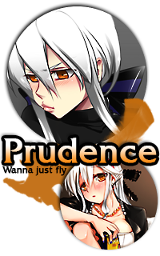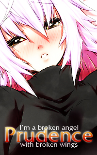Gretel
Améthrylde
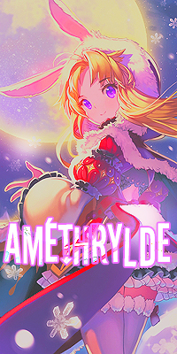Héphaïstos
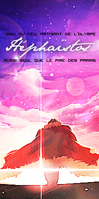Leona

Loune
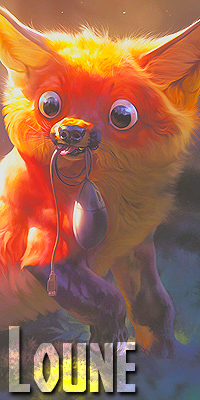Lunara, Mello et Pride (cadeaux)
Nimiel
Valadion
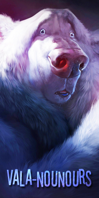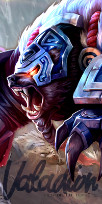Créations non utlisées
Les créations non utilisées peuvent être commandées et modifiées, dans la mesure de mes possibilités. Merci de lire les conditions dans la section « Contact / Crédits ».
Fuuchouin Kazuki, 200*400
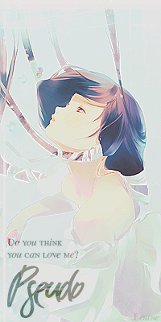OC de l'artiste Kyrie, 200*400
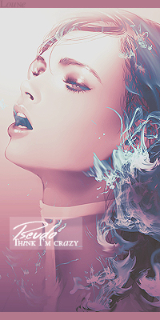Minecraft, 200*400
Pikachu, 200*320
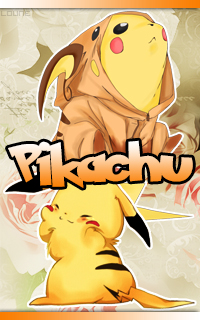Les formats horizontaux
Vous trouverez dans cette section des créations au format horizontal pour forum (RPG, de discussion...). Les dimensions sont assez diverses, généralement elles sont précisées dans le règlement de chaque forum.
Je vais également mettre ici les images dont le format n'est pas assez grand pour entrer dans la catégorie des bannières, mais qui ne sont pas des signatures non plus.
SignaturesGrands formatsCréations non utiliséesSignature Batty
Signature Jiji
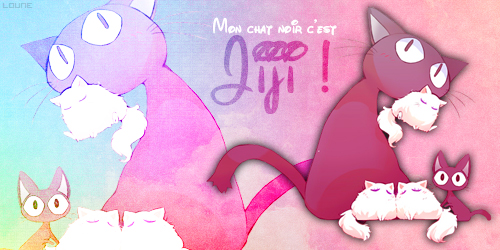Signature Nerith
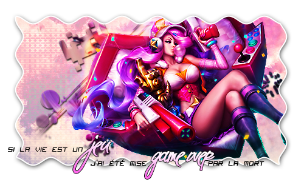Grand format Comics' Girls
Grand format Lunara
Grand format Katarina du Couteau
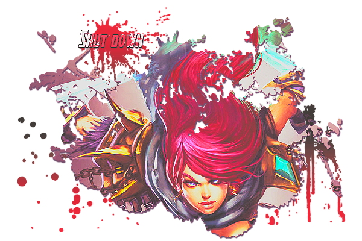Grand format Saint Seiya
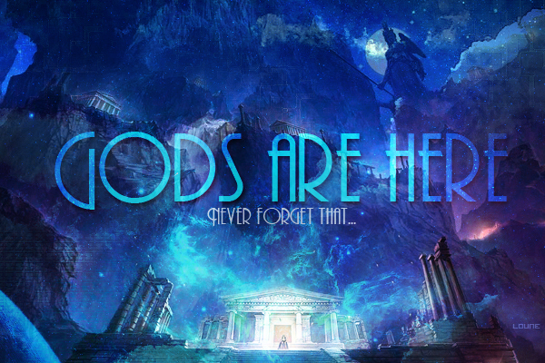Créations non utlisées
Les créations non utilisées peuvent être commandées et modifiées, dans la mesure de mes possibilités. Merci de lire les conditions dans la section « Contact / Crédits ».
Grand format Hatsune Miku
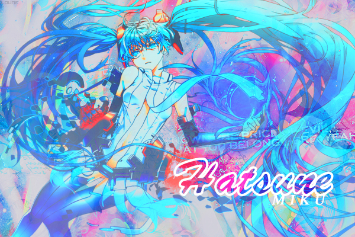Les bannières
Vous trouverez dans cette section des bannières pour forum (RPG, de discussion...). Certaines font parties d'un design complet, dont les autres pièces ne sont pas affichées sur ce site. Les bannières ne sont pas à leur taille d'origine, je vous invite à cliquer dessus pour les ouvrir à la bonne taille.
BannièresCréations non utiliséesLes chartes graphiques
Vous trouverez dans cette section des chartes graphiques que j'ai réalisées. Les chartes graphiques que je propose contiennent généralement un ou plusieurs logos, une capture d'écran de la page d'accueil afin de présenter l'agencement du site et une mascotte, déclinée en plusieurs couleurs, si le site s'y prête.
Conte-moi une histoireConte-moi une histoire
Cette charte graphique a été réalisée dans le cadre de ma troisième année de licence en Sciences du langage, de l'information et de la communication. Le but était de créer un objet pédagogique interactif. Le sujet était le suivant : l'écriture d'un conte merveilleux. Cette charte graphique comprend la création de la mascotte et des logos déclinés sous trois couleurs, ainsi que les icônes de la navigation.
Ernest, la mascotte
Ernest est le petit personnage qui va accompagner l'utilisateur durant toute sa navigation. Je l'ai décliné en trois couleurs et avec plusieurs expressions.
 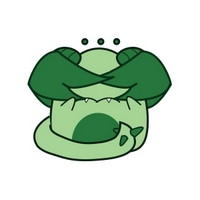
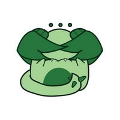Les logos
Les logos ont également été déclinés sous trois couleurs.

Screen de la page d'accueil
Voici une capture d'écran de la page d'accueil, afin de présenter l'organisation de l'application.
Les réalisations web
Vous trouverez dans cette section les aperçus des quelques sites que j'ai réalisés. Ils sont tous sous licence CC BY-NC-ND 4.0. J'en ai réalisé le codage et le webdesign.
Carter et Saly : l'art de la page d'accueilLes astuces du platypusApprends-moi les métadonnéesL'art de la page d'accueil

« L'art de la page d'accueil » est un site crée en 2014. Il présente toutes les astuces bonnes à connaître dans l'élaboration de la page d'accueil d'un site Internet. Ces astuces sont basées sur les règles rédigées par Jakob Nielsen et Marie Tahir, dans leur ouvrage « L'art de la page d'accueil : 50 sites web passés au crible ».
Les astuces du platypus
« Les astuces du platypus » est un site crée en 2014. Suivez Lucius le petit ornithorynque dans une analyse des bonnes habitudes à connaître lors de la conception d'un site Internet responsive ou d'une application mobile. Les crtières de Jakob Nielsen et Marie Tahir en sont la base, de même que ceux de l'AFNOR (Association française de normalisation) et de Amélie Boucher, une ergonome de renom.
Les partenaires
Vous trouverez dans cette section toutes les fiches des partenaires ainsi que les conditions pour devenir partenaires.
J'accepte la plupart des demandes de partenariat. Forums d'aide, collègues graphismes ou programmeurs, forums RPG ou même sur des sujets divers et variés sont les bienvenues. Les sites de vente seront soumis à une réflexion plus apporfondie. Je me réserve le droit de refuser une demande si elle ne me plait pas où si les conditions ci-dessous ne sont pas respectées !
Les conditions sont simples : sur mon site, un logo du partenaire ainsi qu'une fiche de présentation seront présents dans cette section. Il est possible que le logo apparaisse également dans ma navigation, dans ce cas je demande la même visibilité sur le site partenaire. L'échange doit être équitable. De plus, je n'autorise pas le partenaire à utiliser mon image ou mes créations sans mon autorisation, sous peine de rompre le partenariat ou d'aller même jusqu'à des poursuites.
Si les conditions sont respectées, c'est avec plaisir que j'accueille toute plateforme intéressée par mon travail et un échange de bon procédé. Vous trouverez ci-dessous les fiches des partenaires.
1twitifEpicodeAstier Industries1twitif
1twitif est le site de Millicent Billette de Villemeur, développeur web spécialisé javascript. Son approche souple lui permet d'être à l'écoute de vos besoins et de ceux de vos clients en optimisant l'expérience utilisateur, tant sur le plan ergonomique que technique.
Epicode
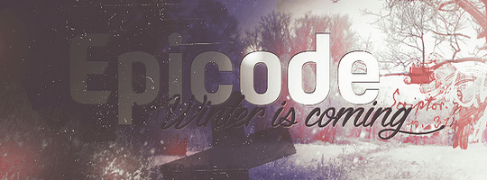Epicode est un forum d'aide pour le codage et le graphisme. Ouvert en 2012 par sa fondatrice Madouce et gérée aujourd'hui par ses deux administratrices Mello et Lunara, Epicode regroupe toute une communauté de passionnés de graphisme et de codage, dans un but de partage et d'échange. Ce forum comporte des sections de commandes (en graphisme et codage) mais également des sections de libre service, de conseils et des tutos proposés par les membres.
Astier Industries
Astier Industries est une entreprise créée par Astier. Cet ancien illusionniste, aujourd'hui consultant en paranormal, vous propose de vous mener dans les ruelles de l'Angleterre du 19e siècle, aussi appelée l'ère victorienne. Ce féru de surnaturel et de steampunk va vous embarquer dans son quotidien loin d'être normal et vous apprendre que les histoires de fantômes ne sont pas toutes fausses.
Me contacter / Les crédits
Me contacter
Pour me contacter, je vous invite à cliquer sur le lien suivant, ce qui vous permettra de m'envoyer un e-mail. Je répondrais le plus rapidement possible à toute demande :
Merci de bien préciser l'objet de votre e-mail. Pour toute relance sur une commande, merci de me laisser au moins une semaine de travail (généralement je vous enverrais les premiers essais moins d'une semaine après la commande). En cas de retard, je vous préviendrais rapidement.
Les crédits
J'ai divisé les crédits en deux parties : les crédits concernant le site (code et webdesign) et des conditions spécifiques pour les créations graphiques. Merci de bien les respecter.
Les crédits du siteLes crédits des créations graphiquesLes crédits du site
Site mis en place par Lou Ballangé, à Bordeaux / Bègles, durant l'année 2015. Merci à Millicent Billette, programmeur de l'entreprise 1twitif, pour son aide précieuse.

Le site Internet est intégralement sous licence Creative Commons BY-NC-ND 4.0.
Les crédits des créations graphiques
Tous les droits de ce qui se trouvent sur ce site sont réservés à mon utilisation, personnelle comme professionnelle. Toutes les créations sont marquées de ma signature et sont ainsi ma propriété intellectuelle. Toutes les créations hormis celles estampillées « Créations non utilisées » sont déjà prises par des internautes.
Si vous souhaitez néanmoins utiliser mes créations dans le cadre personnel, c'est possible en me contactant et en me demandant, ainsi qu'en précisant soit mes prénoms et noms soit mon pseudonyme sur votre plateforme. J'accepte les commandes, soit de modification des créations non utilisées soit de créations nouvelles. Je mets généralement un à trois jours pour vous présenter le premier essai d'une commande nouvelle.
Dans le cadre d'une utilisation professionnelle et lucrative, merci de me contacter afin d'établir des conditions d'utilisation ainsi qu'un échange (si l'utilisation est lucrative pour vous, le retour doit être à la hauteur pour moi).